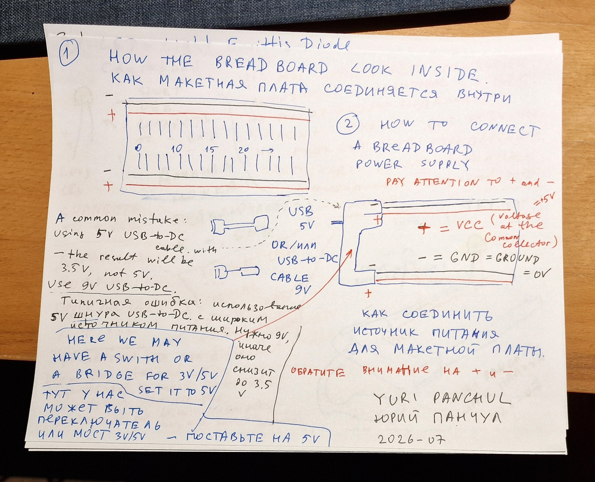
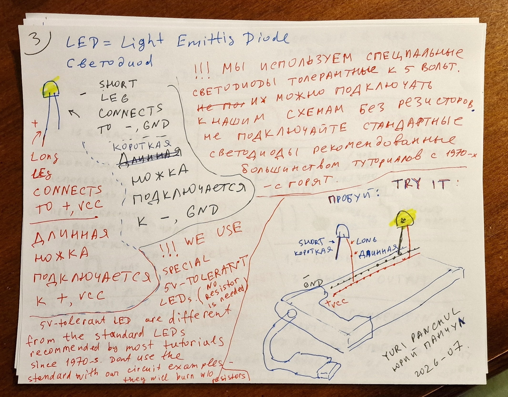
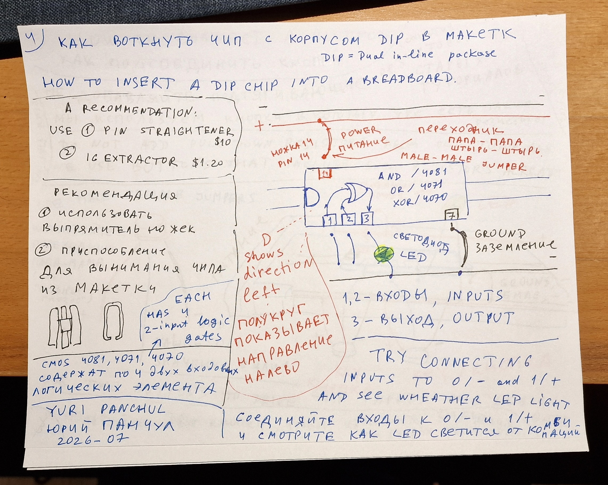

Start here / English / 45–60 minutes
Your first logic circuit.
Learn the breadboard, check 5 V power, connect a button, and build an XOR gate. Then watch a D flip-flop remember one bit.
Adapted from the four hand-drawn pages in Yuri Panchul’s July 23 notes, using the LSSK parts list. Русская версия →
1. Put these parts on the table
| Part | For the first XOR experiment | LSSK row |
|---|---|---|
| Full-size breadboard, 5 V regulator module, USB-to-DC cable marked 9 V | 1 of each | 45, 56, 57 |
| CD4070BE in a 14-pin DIP package | 1 | 2 |
| Individual button modules with embedded pull resistors; VCC, GND and OUT pins | 2 (from a five-module pack) | 66 |
| 5 V current-limited LED; 8-LED module with current limiting | 1 single LED + 1 bar | 46, 62 |
| M–M and M–F jumpers, IC extractor | 40 of each jumper type available; 1 extractor | 70, 71, 53 |
| Prepared LED observation stage: SN74HCT244N + 8 × 2.2 kΩ | 1 buffer + 8 resistors | Engineering addition |
| 100 nF ceramic capacitors; 10 µF bulk capacitor | 2 × 100 nF + 1 × 10 µF | Engineering addition |
A teacher supplies a USB 5 V source and a multimeter. The buffer and capacitors are small additions to the source list: they make the logic signals independent of uncertain LED-module current. The teacher can prepare this observation stage once; students then plug signals into its inputs.
2. Understand the breadboard and power it

- Disconnect power while wiring. In the center area, groups of five holes share a contact. The center trench separates the two sides. Side power rails run lengthwise; some rails are split halfway. Use the meter’s continuity mode with power off to find any breaks.
- Seat the power module so its positive and ground pins match the board’s rail markings. Set each used output selector to 5 V. Bridge interrupted rails and connect grounds between boards when expanding.
- Connect USB 5 V source → boost cable marked 9 V → regulator barrel input → 5 V breadboard rails. Check the barrel polarity against the actual module. The 9 V stays on the regulator input.
- Before inserting a logic IC, measure the rail: red probe on +, black on GND. Aim for approximately 5.0 V; all shared HCT parts require 4.5–5.5 V. Turn power off again.
- Fit 10 µF between the rails, with correct polarity. Later place a 100 nF capacitor directly across each IC’s supply pins, as close to the IC as the layout allows.
3. Light one LED

With power off, connect the long anode lead to +5 V and the short cathode lead to GND. The flat side of the case usually marks the cathode; verify the supplied part if leads were trimmed. Switch on: it should light. Switch off before moving it. This direct supply test uses the LSSK current-limited 5 V LED, not a standard bare LED.
Checkpoint: the LED lights steadily and the supply still measures near 5 V.
4. Insert the chip across the center gap

Check the marking: CD4070BE is the XOR chip. Gently straighten bent leads before insertion. Put one row of pins on each side of the trench. Viewed from above with the notch at the top, pin 1 is top left; count down the left side to 7 and up the right side from 8 to 14.
| CD4070 pin | Connect to |
|---|---|
| 14 — VDD | +5 V |
| 7 — VSS | GND |
| 1 — A, 2 — B | The two button OUT signals (next step) |
| 3 — XOR output | Observation buffer input, not a power rail |
| 5, 6, 8, 9, 12, 13 — unused inputs | GND; unused CMOS inputs must have a defined level |
| 4, 10, 11 — unused outputs | Leave disconnected |
| 100 nF capacitor | Between pins 14 and 7 |
Pin reference: TI CD4070B/CD4077B datasheet, pinouts.
5. Connect two buttons and the observer

- Use M–F jumpers to connect each module’s VCC to +5 V and GND to GND. Connect OUT from button A to CD4070 pin 1, and OUT from B to pin 2.
- Check each module with the meter: this guide assumes released ≈0 V and pressed ≈5 V. If a module is active-low, record the reversed meaning or choose the specified active-high variant. An analog resistor-ladder keypad cannot replace these independent outputs.
- Use the prepared observation stage below. Connect its first input to CD4070 pin 3. The extra buffer lets the logic chip drive a logic input while the buffer supplies LED current.
Teacher’s observation stage — exact connections
SN74HCT244N: pin 20 → +5 V; pin 10 → GND; enable pins 1 and 19 → GND; 100 nF across supply. First channel: pin 2 (input) ← CD4070 pin 3; pin 18 (output) → 2.2 kΩ → LED bar channel 0. Connect the bar’s common cathode to GND. Tie unused buffer inputs 4, 6, 8, 11, 13, 15, 17 to GND. Leave unused outputs disconnected.
For later experiments the eight input→output pairs are 2→18, 4→16, 6→14, 8→12, 11→9, 13→7, 15→5, 17→3. Each used output has its own 2.2 kΩ resistor before the corresponding LED channel. The bar must be the passive, common-cathode current-limited version. With a common-anode or transistor-input variant, use its documented interface instead.
The original sketches show LEDs directly on gates. A 5 V rating ensures an LED can be powered from 5 V; it does not prove a CD4000 output can drive its current while retaining a valid logic-high voltage. This buffer is the documented modification. TI buffer datasheet.
6. Test the truth table
Switch on and try every combination. XOR lights only when exactly one button is pressed. Record predictions before testing.
| A | B | XOR — 4070 | AND — 4081 | OR — 4071 |
|---|---|---|---|---|
| 0 | 0 | 0 | 0 | 0 |
| 0 | 1 | 1 | 0 | 1 |
| 1 | 0 | 1 | 0 | 1 |
| 1 | 1 | 0 | 1 | 1 |
Power off and use the extractor to lift the chip evenly from both ends. Try CD4081 and CD4071 in the same gate connections. CD4069 is different: first inverter input is pin 1, output pin 2; power is still 14/7. Tie its unused inputs 3, 5, 9, 11, 13 to GND. Check that its output is the opposite of its input.
You have finished the first experiment when you can explain the four XOR results, find the chip’s power pins without guessing, and distinguish a logic input from an output.
7. Watch one bit of memory
Replace the gate with CD4013BE. Keep the LED observer. Add one assembled 555 clock module (LSSK row 54) and one SN74HCT14N clock conditioner with a 100 nF capacitor. Use two buttons: DATA and RESET. Set the clock to approximately 0.5–1 Hz.
| Part / pin | Connection |
|---|---|
| 4013 pins 14 / 7 | +5 V / GND; 100 nF across them |
| 4013 pin 5 — D | DATA button OUT |
| 4013 pin 4 — RESET | RESET button OUT, active high |
| 4013 pin 6 — SET | GND |
| 4013 pin 3 — clock | Conditioned clock from HCT14 pin 4 |
| 4013 pin 1 — Q | Observer input; optionally observe pin 2 = NOT Q on another channel |
| Unused second flip-flop | Tie pins 8, 9, 10, 11 to GND; leave outputs 12 and 13 disconnected |
| HCT14 clock conditioner | 14 → +5 V, 7 → GND. 555 OUT → pin 1; pin 2 → pin 3; pin 4 → 4013 clock. Tie unused inputs 5, 9, 11, 13 to GND |
The clock module shares the same 5 V supply and GND. HCT14’s two inversions preserve the clock polarity and restore full CMOS levels. Do not connect a raw mechanical button to a clock input; for manual sampling use the RC + Schmitt circuit in engineering notes.
- Press RESET, release it, then set DATA before a rising edge.
- After that edge, Q must equal the sampled DATA.
- Change DATA midway through the cycle: Q must hold until the next rising edge.
- Press RESET between edges: Q must clear immediately.
TI CD4013B pinout and function · TI SN74HCT14.
If something does not work
| Symptom | Check |
|---|---|
| Nothing lights | Supply voltage and polarity, power switch, split rails, LED cathode, buffer enables. |
| A gate behaves randomly | Floating inputs, misplaced pins, button output polarity, loose wires and local decoupling. |
| Outputs change more than once per button press | Contact bounce. Use conditioned manual sampling; an embedded pull resistor is not a debouncer. |
| Clock LED blinks but Q never changes | Common ground, HCT14 wiring, SET held low, RESET released, D stable before the rising edge. |
| A chip becomes warm or the rail voltage collapses | Turn power off; check rotated ICs, reversed supply and outputs accidentally joined together. |
Where to go next
Try the counter, shift register and adder. For a seven-segment display, use a common cathode, a 4511, and seven separate 560 Ω resistors—one per segment. Then move to the arbiter, sequence FSM or FIFO project. These same structures form the bridge to SystemVerilog and FPGA exercises in BGM.